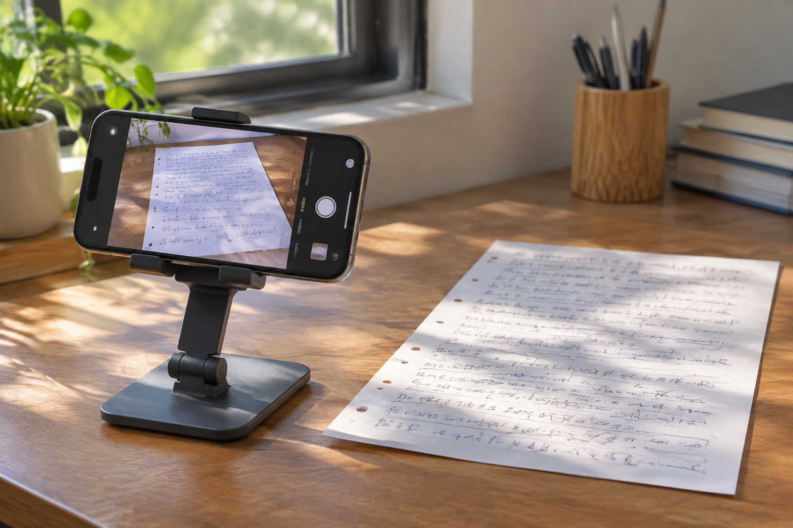

手机拍完纸张发灰，重庆笔迹鉴定照片需要重新拍吗
纸面发灰不一定影响阅读，局部反光和失焦反而更值得先检查。重新拍摄之前，可以先看关键笔画有没有保留下来。

先检查墨线而非纸色
重庆笔迹鉴定资料通过手机整理时，白纸常因室内光线变成灰色或暖黄色。只要墨线清楚、没有严重色偏和曝光丢失，纸色不够白本身并不是首要问题。相反，反光处看似洁白，浅色笔画却可能已经消失，调暗图片也未必能恢复。
放大检查几个位置
可选页面四角、中心和落款处检查清晰度。整页看起来清楚，不代表边缘同样对焦；镜头倾斜或纸张翘起会让部分区域变糊。模仿笔迹参考页应同时保留完整布局和必要局部，补拍时沿用页码，避免收到多张近照后不知道来自哪一处。
签名局部避免贴得太近
拍模仿签名或模仿签字材料时，手机距离过近可能超出正常对焦范围。适当后退、保持镜头平行纸面，再从原图裁出局部，往往比凑近拍更稳定。拍摄后检查实际文件，不能只看相机取景框中的预览。
原图与阅读副本分开
若为了阅读调整亮度，另存副本并标注处理方式。不要反复覆盖原文件，也不要将聊天预览图当作相机原图。资料条件说明得越清楚，后续越容易判断该补拍哪一页，而不是整批照片来回重传。